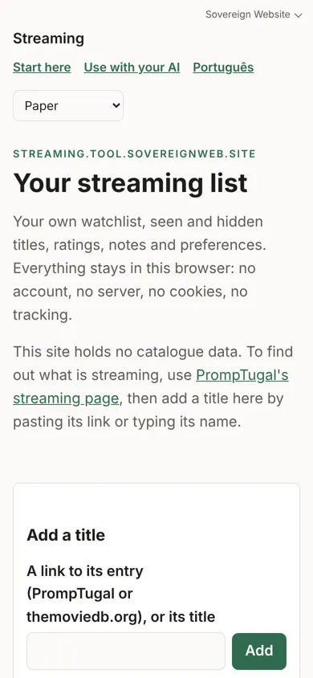
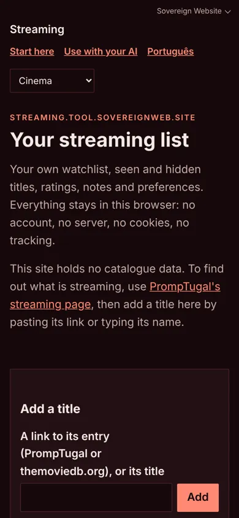
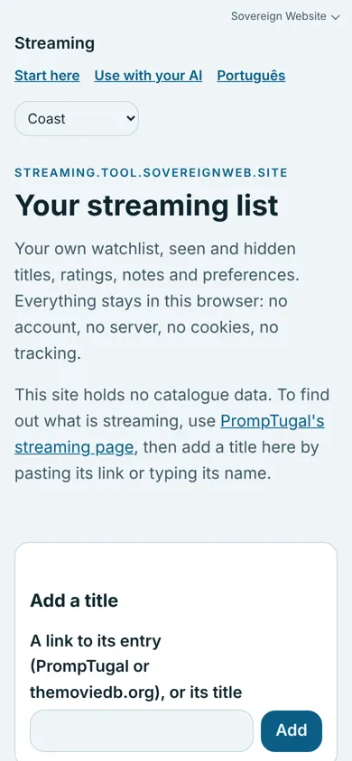

Synthetic users: Streaming, round 1
Site: https://streaming.tool.sovereignweb.site/ at 3eac181 (v0.1.7), kept by streaming.d. The home page as a first visitor sees it: an empty list, in the default design, Paper. Run: 22 November 2026, 01:04 UTC, by synthetic-users.d, asked for by design.d. Look score: 2.8 (3, 2, 3, 3, 3). Best design votes: Cinema 2, Paper 2, Coast 1. Weakest: Night 2, Contrast 1, Cinema 1, Paper 1. Nobody said "wow".
Method: Synthetic users. One subagent per persona, each given only the phone first screen (390 x 844), full-page phone and desktop (1440) screenshots, light and dark, at 2x, the page's visible text, and the first screen of each of the five designs. None was given the guidelines or design.d's findings. The site's own audience, as design.d set it: someone in the UK or Portugal who watches Netflix, Disney+, Prime Video or Apple TV+ and wants to keep their own watchlist. These are simulations, and never replace the measured checks or a real person.
| Persona | Look | Best | Weakest | The one change |
|---|---|---|---|---|
| Phone visitor | 3 | Cinema | Contrast | Put the Add box under the heading, cut the intro to one line, tuck the design select away |
| Small business owner | 2 | Coast | Night | Open with a filled-in example instead of empty forms |
| Low-vision reader | 3 | Paper | Cinema | Label the design choice, and follow the device's dark mode and high-contrast settings |
| Design critic | 3 | Paper | Night | Fix the spacing inside the cards, then give the empty list a real empty state |
| Streaming viewer | 3 | Cinema | Paper | Show what a filled list looks like when empty; put "Add a title" under the heading |
Agreed by all five
- Dark mode changes nothing on the default design. Checked: the light and dark phone screenshots of Paper are identical. Each design keeps its own colours whatever the device asks for.
- A large empty gap above each card's heading reads as a spacing bug.
- "No account, no server, no cookies, no tracking", said early and plainly, earns trust, with the source link and version in the footer.
Agreed by four
- The empty first visit reads as a settings form, not a watchlist: "Nothing here yet", "0 / 0", "No saved views yet", and nothing that shows a film (all but the low-vision reader). Three ask for a sample of a filled list.
- The file picker is the browser's unstyled "Choose File" and clashes with the rest.
- Finding a title means leaving for PrompTugal's page first, a long way round (all but the small business owner).
Agreed by two
- On the phone the Add box is only half in view on the first screen.
- The design select shows only "Paper", with no visible label.
- The critic: "all five are colour skins on one identical layout".



